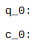
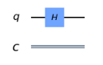
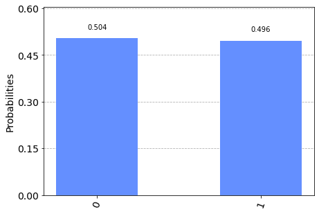
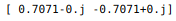
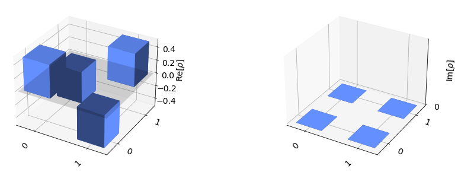
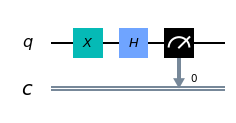
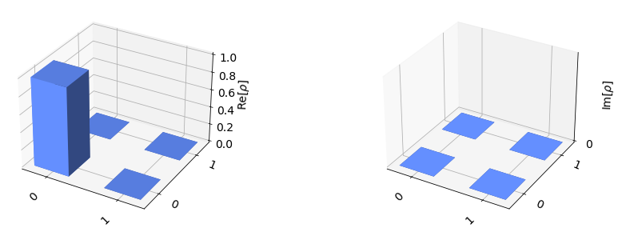

Qiskit is an open-source software development kit (SDK) used to program IBM's quantum computers. Qiskit is useful for working with noisy quantum computers at the level of pulses, circuits, and algorithms. Qiskit has three main components as Terra, Aqua, and Aer. This is an introductory tutorial on quantum computing, which will also get you started programming with qiskit.
This tutorial assumes knowledge of Basic Linear Algebra, Basic Quantum Mechanics, and Basic Digital logic but, most importantly, an open mind not limited to accepting only classical thinking!
Analogous to the bits used by classical computers, quantum computers use qubits as the basic unit of quantum information. But what are qubits exactly?
Think of an electron. Remember that the energy states of the electron are quantized and can only take on discrete values. Now, if we wish to represent a 'bit' of information, we can restrict the energy of the system to be between the ground state and the first excited state. This way, the electron can only be at either of the two states denoted by \(|0\rangle\) or \(|1\rangle\).
But the specialty of quantum particles like electrons is that it does NOT decide beforehand where it wants to be, which is why we say that is in a superposition of the states \(|0\rangle\) and \(|1\rangle\).
The superposition of the states can be represented as a linear combination of the original states as \[\alpha|0\rangle + \beta |1\rangle\] where \(\alpha, \beta \in \mathbb{C}\) represents the complex amplitudes of each of the states.
But what does an amplitude mean? The physical interpretation of this can be explained by the Born rule, which says that the probability of each of the quantum states is given by the square of its complex amplitude. To find the probability, we multipy on the left by the corresponding bra vector and note that these states are orthogonal and normalized meaning \(\langle0|1\rangle=0=\langle1|0\rangle\) and \(\langle0|0\rangle=1=\langle1|1\rangle\). The reason for this will become clear in a second, just bear with me for a second.. \[P[\text{finding the electron in state }|0\rangle] = |\alpha\langle0|0\rangle + \beta \langle0|1\rangle|^2 = |\alpha|^2\] \[P[\text{finding the electron in state }|1\rangle] = |\alpha\langle1|0\rangle + \beta \langle1|1\rangle|^2 = |\beta|^2\] Because we have restricted the energy of the electron to be at one of the states \(|0\rangle\) or \(|1\rangle\) and since probabilities always add up to 1, we can say that
\[|\alpha|^2 + |\beta|^2 = 1 \] This is called normalization, which captures the probabilistic thinking in QM which was the reason we took the states to be orthogonal meaning \(\langle0|1\rangle=0=\langle1|0\rangle\) and normalised \(\langle0|0\rangle=1=\langle1|1\rangle\) earlier
Now let us discuss what happens when we measure the system. A measurement of the system collapses the system into one of its states along which we are measuring. So the electron quickly makes up it's mind as to where it wants to be, either at the \(|0\rangle\) state or at the \(|1\rangle\) state. So, on measuring along the \({\{|0\rangle, |1\rangle}\}\) basis, the system collapses to \(|0\rangle\) with probability \(|\alpha|^2\) and to \(|1\rangle\) with probability \(|\beta|^2\). Measuring a system along a basis is essentially multiplying the state with the corresponding bra vectors of the basis.
(Representing the qubits by \(|0\rangle\) and \(|1\rangle\) is especially helpful while doing quantum information as it gives us a way to encode the fact that they represent bits 0 and 1 respectively. But this notation also captures the fact that the qubit is a much more complicated object than the classical bit.)
Now let us try to visualize and represent these states more concretely. since there are two complex amplitutes, we can represent them as a column vector with 2 entries \[\alpha |0\rangle +\beta |1\rangle = \begin{pmatrix} \alpha\\ \beta \\ \end{pmatrix}\] In this representation, we notice that we can express our abstract labelled kets \(|0\rangle\) and \(|1\rangle\) in a mathematical way. We see that - \[|0\rangle = \begin{pmatrix} 1 \\ 0 \\ \end{pmatrix} \text{ when } \ \alpha=1 \ \text{ and } \ \beta = 0\] and \[|1\rangle = \begin{pmatrix} 0 \\ 1 \\ \end{pmatrix} \text{ when } \ \alpha=0 \ \text{ and } \ \beta = 1\] Notice that this representation tells us a few things about these two states.
Hence we call such states to be orthonormal basis states. (A basis set is a set of linearly independent vectors that span the vector space. A vector space can have any number of basis sets.)
Let us now say we have a state \[|\psi\rangle = \begin{pmatrix} \cos\theta \\ \sin\theta \\ \end{pmatrix}\] which makes an angle of \(\theta\) with the \(|0\rangle\) state. Let us make a large number of qubits which are prepared to be at the above state and then measure these qubits. When we measure them, the qubit makes up its mind as to which state it wants to be, and we find \(\cos^2\theta\) fraction of the qubits at the ground state and \(\sin^2\theta\) fraction of the qubits at the excited state.
Note that measurement of a system can be done in an arbitary basis and our results depend on the basis along which we perform our measurement. In the above case the measurement was done on the \(|0\rangle\) and \(|1\rangle\) basis. Now let us chose another basis \({\{|+\rangle, |-\rangle}\}\) as \[|+\rangle = \frac{1}{\sqrt 2}(|0\rangle+|1\rangle)\] and \[|-\rangle = \frac{1}{\sqrt 2}(|0\rangle-|1\rangle)\] You can quickly verify that this does corresponds to a basis, since it is linearly independent, and spans the vector space. As a bonus we also find that this basis is also orthogonal since the inner product corresponds to 0. Now to measure the state of the system in the \({\{|+\rangle, |-\rangle}\}\) basis, we take the inner product of the state with the basis states\[\langle+|\psi\rangle = \frac{1}{\sqrt 2}(\langle0|+\langle1|)(\cos\theta|0\rangle + \sin\theta|1\rangle)\] \[= \frac{1}{\sqrt 2}(\cos \theta\langle0|0\rangle+\sin\theta\langle1|1\rangle)\] \[=\frac{1}{\sqrt 2}(\cos \theta+\sin\theta)\] Which gives the probability of finding the state \(|\psi\rangle\) in the \(|+\rangle\) state as \[|\langle+|\psi\rangle|^2 = \frac{1}{2}(\cos\theta + \sin\theta)^2\] Similarly, \[\langle-|\psi\rangle = \frac{1}{\sqrt 2}(\langle0|-\langle1|)(\cos\theta|0\rangle + \sin\theta|1\rangle)\] \[= \frac{1}{\sqrt 2}(\cos \theta\langle0|0\rangle-\sin\theta\langle1|1\rangle)\] \[=\frac{1}{\sqrt 2}(\cos \theta-\sin\theta)\] Hence, the probability of finding the state \(|\psi\rangle\) in the \(|-\rangle\) state as \[|\langle-|\psi\rangle|^2 = \frac{1}{2}(\cos\theta - \sin\theta)^2\] As expected, the probabilities add up to 1 which we can see as \[|\langle+|\psi\rangle|^2 +|\langle-|\psi\rangle|^2 = \frac{1}{2}(\cos\theta + \sin\theta)^2+\frac{1}{2}(\cos\theta - \sin\theta)^2=1\] But note in interesting fact here. Let us see what happens as \(\theta\) tends to 0. As \(\theta\) gradually tends to 0, \(\sin\theta\) tends to 0 and \(\cos\theta\) tends to 1 and we can deterministically claim that the qubit is in state \(|0\rangle\) when measured in the \({\{|0\rangle, |1\rangle}\}\) bais. However in the \({\{|+\rangle, |-\rangle}\}\) basis, the qubit is in the \(|+\rangle\) state with a probability of \(\frac {1}{2}\) and in the \(|-\rangle\) state with a probability of \(\frac {1}{2}\) which is the case of maximum uncertainity.
This is essentially the Heisenberg's Uncertainty principle which says that the more we know about a system in one basis the less we know about the system in another basis. (You may remember this principle as relating the uncertainties of position and momentum which is a special case, since each of them form a valid basis for the vector space.)
This is a good opportunity to introduce the Bloch sphere, an excellent visualization tool to see the states of a system, and how their change can be represented as a movement on the surface of the sphere. We use the fact that the states are normalized, and hence each point of a Bloch sphere represents a valid state.
Any normalized pure state can be represented as \[|\psi\rangle = \sin\frac\theta 2|\psi_{1}\rangle+e^{i\phi}\cos\frac\theta 2|\psi_{2}\rangle\] where \(|\psi_{1}\rangle,|\psi_{2}\rangle\) are the basis vectors, \(\theta\) is the angle made by the z-axis and \(\phi\) is the angle made by the projection of the vector in the x-z plane in the anticlockwise sense.
For example we can chose our familiar \({\{|+\rangle, |-\rangle}\}\) basis and see that
\[|\psi\rangle = \sin\frac\theta 2|0\rangle+e^{i\phi}\cos\frac\theta 2|1\rangle\] The coordinates of such a state will be
\[r = \begin{pmatrix} \sin\theta \cos\phi\\ \sin\theta \sin\phi \\ \cos\theta \end{pmatrix}\]
So the vector \(|0\rangle\) can be written as \(\begin{pmatrix} 0\\ 0 \\ 1 \end{pmatrix}\) and \(|1\rangle\) can be written as \(\begin{pmatrix} 0\\ 0 \\ -1 \end{pmatrix}\). Now it is common to get confused as to whether \(|0\rangle\) equals to \(\begin{pmatrix} 0\\ 0 \\ 1 \end{pmatrix}\) or \(\begin{pmatrix} 1 \\ 0 \\ \end{pmatrix}\)
as we discussed in the previous section. It is none! Both of these are just representations of the abstract state that we did to understand it better.
Another crucial thing to note is that antipodal vectors form basis states of the system in the Bloch sphere while in the actual vector space, they are orthogonal and have an angle of \(\pi/2\). For example, the \({\{|+\rangle, |-\rangle}\}\) basis, \({\{|0\rangle, |1\rangle}\}\) basis or the \({\{|+i\rangle=\frac{1}{\sqrt2}(|0\rangle+i|1\rangle), |-i\rangle=\frac{1}{\sqrt2}(|0\rangle-i|1\rangle)}\}\) basis (which are along the z, x, and y axes respectively).
I believe now we are ready to understand what quantum gates are and their significance. Since we know that measuring the qubit will collapse the system and we will lose the initially prepared state, we can try to manipulate that initial state of the qubit by passing it through different quantum gates in a quantum circuit without explicitly measuring it. This represents the transfer of quantum information. Notice here the analogy with classical bit manipulation in digital logic.
These gates have many interpretations. Mathematically they can be thought of as unitary operators that act on states (since the states are normalized, the operations of these states must be unitary). Visually, these gates correspond to movements of vectors along the Bloch sphere.
Let us now get started with coding them hands-on with qiskit which is open-source SDK. With Qiskit, you can run your quantum programs and algorithms sitting at your home and without physically accessing any laboratory with a large quantum computer. You simulate your your quantum programs locally or even send them to IBM's quantum computers, and the'll return the result to you!
To install qiskit simply open the terminal and run
pip install qiskit
After running this command, you should have qiskit successfully installed in your system.
We'll use jupyter notebook for our programs. To open jupyter notebook run
jupyter notebook
which will open a notebook and you can create a new file to start coding!
We begin by importing the module
from qiskit importLet us start by creating 1 quantum register and 1 classical register. We do this by the QuantumRegister and the ClassicalRegister function respectively, and as the argument, we pass the number of bits we want-
qr = QuantumRegister(1)
cr = ClassicalRegister(1)Then we built a QuantumCircuit composed of the two classical and quantum bits by running
qc = QuantumCircuit(qr, cr)Here the variable 'qc' has the quantum circuit in it. To draw the circuit at any point, we use the draw() function
qc.draw()This should return an output like this-

We could have also done the above 4 lines by the QuantumCircuit() function
qc = QuantumCircuit(1,1)
qc.draw()Here the first argument is the number of quantum bits, and the second argument is the number of classical bits.
By convention, all the qubits are initialized at the state \(|0\rangle\). Now let us look at some essential gates which we use to manipulate these qubits.
This is the most important quantum logic gate called the Hadamard gate. This gate is represented by the matrix \[H = \frac{1}{\sqrt2}\begin{pmatrix} +1 & +1\\ +1 & -1 \\ \end{pmatrix}\] A few operations of this gate are shown as follows, which can be checked by multiplying the Hadamard matrix on the left of the state vector. \[H|0\rangle = \frac{1}{\sqrt 2}(|0\rangle-|1\rangle)= |-\rangle\] \[H|1\rangle = \frac{1}{\sqrt 2}(|0\rangle+|1\rangle)= |+\rangle\] \[H|+\rangle = |0\rangle\] \[H|-\rangle = |1\rangle\] On the Bloch sphere, it corresponds to a rotation of \(\pi\) around the \(\frac{x+z}{\sqrt2}\) axis. Equivalently, it is the combination of two rotations \(\pi\) around the z-axis and a \(\frac {\pi}{2}\) around the y-axis This gate is used to introduce superposition within the states of the system. Let's code this in qiskit!
qc.h(0)This adds a Hadamard gate on the number of qubits passed as the argument (Remember that arrays are numbered from 0 in python)
Let's draw the circuit again, and this time we'll beautify our circuits with matplotlib
%matplotlib inline
qc.draw('mpl')The output should look like this

The circuit is read left to right (meaning that gates that are applied earlier in the circuit show up further to the left).
Qiskit Aer is the package used for simulating quantum circuits. It provides many different backends for doing a simulation.
To simulate the above circuit, let's choose our backend as the qasm simulator. A quick digression about the qasm simulator: The qasm simulator acts like a real perfect quantum computer, and there would be some randomness in the results but no errors. A useful feature of the qasm simulator is that it can mimic a real noisy quantum computer and is a quick way for us to get results.
simulator = Aer.get_backend('qasm_simulator')Next, we execute the circuit on the simulator and store the results in a variable called result and plot it's histogram.
result = execute(circuit, backend=simulator).result()
from qiskit.visualization import plot_histogram
plot_histogram(result.get_counts(circuit))
This plot may not make any sense at first, but keep in mind that the qasm simulator returns the counts on the classical register. Since we have not done any measurement on the circuit, it just gives us all counts on the default value of the classical register, which is 0.
However, if we measure the circuit before reading the counts, we see a much more familiar output. To measure, we use the measure() function and pass the quantum bits as the first argument and the classical bits into which we want the measurement as the second argument.
qc = QuantumCircuit(1,1)
qc.h(0)
qc.measure(range (1), range (1))
qc.draw('mpl')
simulator = Aer.get_backend('qasm_simulator')
result = execute(circuit, backend=simulator).result()
from qiskit.visualization import plot_histogram
plot_histogram(result.get_counts(circuit))
Notice the difference between the above two circuits. After we perform the measurement in the second circuit, it collapses the qubit into one of the two classical bits. Since the Hadamard gate takes the input state of \(|0\rangle\) and puts it into an equal superposition of both the states, we see that the probability is roughly 50% for superposition collapsing into each of it's basis states. Also, since we have used the qasm simulator, which mimics a real noisy quantum computer, the probability is not precisely 50%. Let's see some more gates
This gate is represented by the matrix \[X = \begin{pmatrix} 0 & 1\\ 1 & 0 \\ \end{pmatrix}\] This gate when operated on a single qubit acts as follows \[X|0\rangle = \begin{pmatrix} 0 & 1\\ 1 & 0 \\ \end{pmatrix}.\begin{pmatrix} 1 \\ 0 \\ \end{pmatrix}= \begin{pmatrix} 0 \\ 1 \\ \end{pmatrix} = |1\rangle\] \[X|1\rangle = \begin{pmatrix} 0 & 1\\ 1 & 0 \\ \end{pmatrix}.\begin{pmatrix} 0 \\ 1 \\ \end{pmatrix}= \begin{pmatrix} 1 \\ 0 \\ \end{pmatrix} = |0\rangle\] \[X|+\rangle = |+\rangle\] \[X|-\rangle = |-\rangle\] On the Bloch sphere, it corresponds to a rotation of \(\pi\) around the x-axis. Notice that the \(|0\rangle\) changes to \(|1\rangle\) and the \(|1\rangle\) changes to \(|0\rangle\). This gate is hence called the bit-flip and is analogous to the classical NOT gate.
Let us make a circuit using this
circuit = QuantumCircuit(1,1)
circuit.x(0)
circuit.h(0)
circuit.draw('mpl')
This time, we'll look at a different simulator to run this called the state vector simulator. This simulator returns the quantum state, a complex vector of dimensions \(2^n\) where \(n\) is the number of qubits used. So be careful using this as it will quickly get too large to run on your machine.
Since the statevector only returns the quantum state and measuring the quantum state will collapse the system into it's basis states. Let us illustrate this by executing the above code.
simulator = Aer.get_backend('statevector_simulator')
result = execute(circuit, backend=simulator).result()
outputstate = result.get_statevector(circuit, decimals=4)
print (outputstate)
which is the quantum state of the system we are in. We can verify this by applying these gates mathematically as follows - \[HX|0\rangle = \frac{1}{\sqrt2}\begin{pmatrix} +1 & +1\\ +1 & -1 \\ \end{pmatrix}\begin{pmatrix} 0 & 1\\ 1 & 0 \\ \end{pmatrix}.\begin{pmatrix} 1 \\ 0 \\ \end{pmatrix}=\frac{1}{\sqrt2}\begin{pmatrix} +1 & +1\\ +1 & -1 \\ \end{pmatrix}.\begin{pmatrix} 0\\ 1 \\ \end{pmatrix}=\frac{1}{\sqrt2}\begin{pmatrix} +1\\ -1 \\ \end{pmatrix}\] which is consistent with what we get above on running the code.
Qiskit also offers a beautiful way to plot the real and imaginary components of the state density matrix as follows.
from qiskit.visualization import plot_state_city
plot_state_city(outputstate)
Now let us repeat this experiment by having measured the circuit beforehand
circuit = QuantumCircuit(1,1)
circuit.x(0)
circuit.h(0)
circuit.measure(range(1),range(1))
circuit.draw('mpl')
Now let's see what our plot gives us
simulator = Aer.get_backend('statevector_simulator')
result = execute(circuit, backend=simulator).result()
outputstate = result.get_statevector(circuit, decimals=4)
from qiskit.visualization import plot_state_city
plot_state_city(outputstate)
Voila! Our quantum state collapsed again after the measurement! Just what we'd expect. Another interesting thing is if we do this experiment again, we might collapse the system into a different state which would give us a different plot. If we do this experiment a large number of times and note the number of times our system collapses into each of our states, we'd find the proportion to agree with the square of the coefficients of basis states of the initial state of the system.
This was an introduction to quantum computing and hopefully by now you understand the power of qiskit in simulating quantum effects in circuits. Next we'll discuss entanglement, a few more gates and some quantum algorithms.